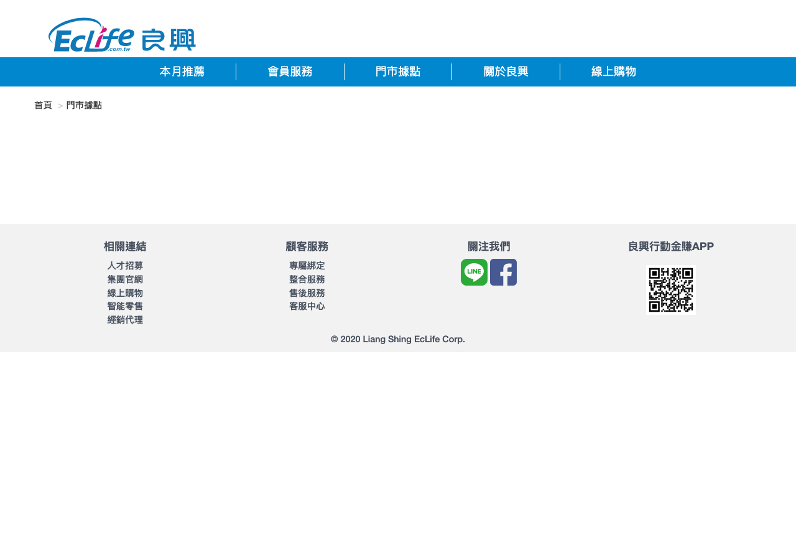
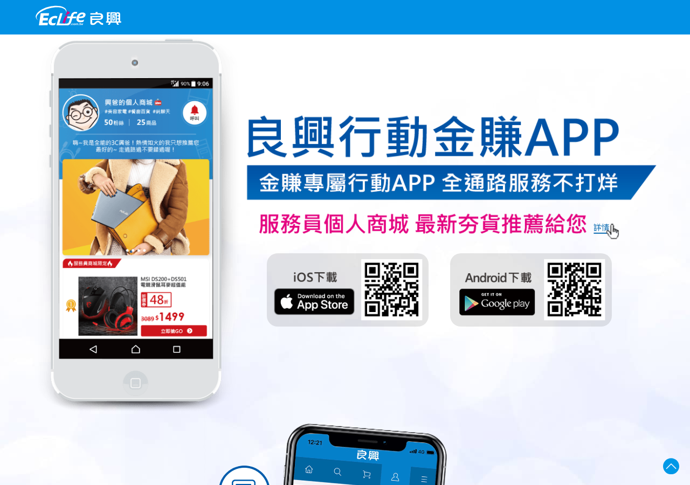
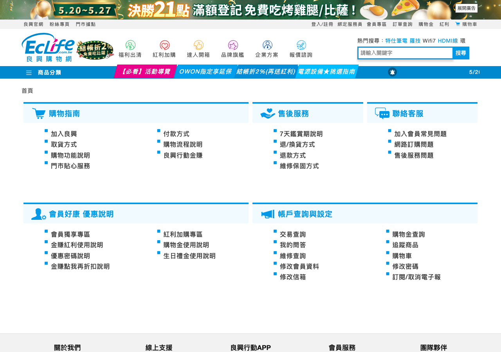

Liang Hsing / EcLife · July Campaign
良興 2026 年 7 月兩線行銷活動提案
夏日換機・AI 效率補給站：線上會員電商轉換 + 線下門市服務導購，讓暑假、AI 辦公、開學補給與小辦公網通需求都回到良興官網、會員、LINE 與門市。
2026/7/1-7/31
官網、APP、會員、LINE、EDM、SEO
門市導購、服務情境、QR 回流
良興網址列表 + 商品快取 + 既有 catalog
Fix What Matters
這版先修正三個可用性問題
固定上一頁、下一頁、總覽、講者、全螢幕，手機也不被 Safari 工具列擋住。
每頁保留頁碼與簡短語境，對齊賈維斯既有 HTML PPT 的閱讀方式。
參考網址改用良興列表：EcLife、門市、APP、會員、客服、LINE、Facebook。
加入官網與服務入口截圖，不再只是黑底文字與商品清單。
Two-Track Strategy
7 月活動要用同一套主題，
打兩條不同路徑
EcLife 活動頁、APP、會員中心、LINE 官方帳號、EDM、SEO 文章與 Facebook 社群，把流量導向商品集合與會員回購。
門市查詢、店員話術、情境陳列、QR Code 回官網，讓現場諮詢變成可追蹤的活動入口。
Reference Sites
視覺與連結改回
良興網址列表裡的網站

良興門市查詢線下導購與 QR 回流
良興行動 APP會員推播與回購入口
良興客服中心服務、售後、FAQ 支撐Source Links
活動提案引用的網站來源
Campaign Theme
主題：夏日換機・AI 效率補給站
不要做泛泛夏季特賣，要用「情境式 3C 補給」把需求接到商品、會員與門市。
視訊會議、直播、筆電、螢幕、擴充座。
電競筆電、螢幕、鍵鼠、耳機、電競椅。
行動電源、快充線、SSD、Hub、筆電周邊。
Wi-Fi 7、Mesh、網卡、備份儲存。
Track A
線上會員電商：
把內容流量收回官網與會員
Hero、四大情境、商品集合、FAQ、會員 CTA。
每週一個主題，避免一則訊息塞太多商品。
依會員身份推送回購、加購與限時提醒。
做可搜尋題目：開學 3C 清單、視訊會議設備、Wi-Fi 7 升級。
Track B
線下門市：
把現場服務變成可追蹤導購
每店選 2 個最適合的情境，不要求所有店都做滿四區。
從規格轉成問題：會議畫面糊？宿舍 Wi-Fi 弱？筆電容量不夠？
每區 QR 導回對應活動頁或商品集合，掛 UTM。
線材、延保、清潔、備份儲存與售後服務頁。
Content Calendar
7 月用四波節奏，
而不是一次打完
商品、價格、贈品、素材與門市參與店點確認。
活動開跑，主打夏日換機總入口。
AI 辦公 / 直播效率週。
暑假電競升級週。
開學補給 + 最後倒數。
Assets
可交付素材要照通路拆開
主標、副標、四區情境、FAQ、會員 CTA。
短句、單一情境、明確 CTA、最後倒數。
清單型、痛點型、比較型、門市導購型。
問題、推薦品類、加購品、QR Code。
Measurement
先定可追蹤 KPI，
結案報告才有意義
活動頁 PV、商品點擊率、LINE CTR、EDM CTR、轉換率、營收。
QR 掃碼、門市來客、主推品銷量、加購率、客單價。
SEO 曝光、搜尋點擊、FB 互動、短影音觀看完成率。
哪個情境有效、哪個品類成交、下次檔期怎麼調整。
Next Step
需要良興確認三件事，就能進入製作
20-40 個 7 月主推商品，依四大情境與毛利排序。
滿額、贈品、會員點數、門市限定與活動期間。
活動頁尺寸、LINE 圖文、EDM、FB 圖、門市 POP/QR。
UTM 命名、QR 入口、結案報告欄位。